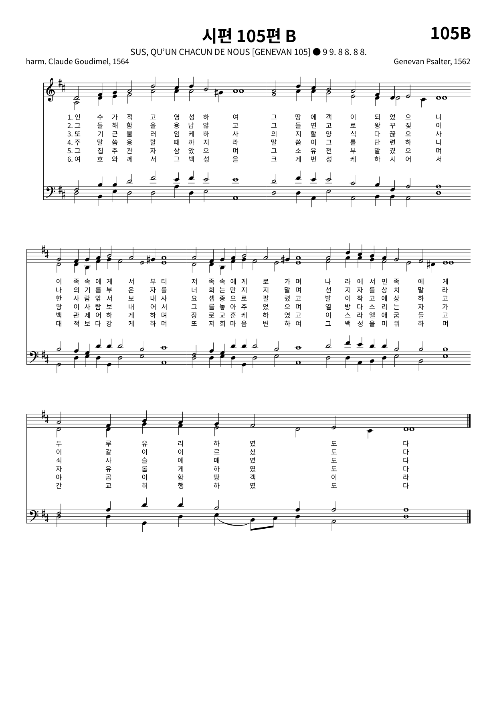

시편 105편 B
SUS, QU’UN CHACUN DE NOUS [GENEVAN 105] · 9 9. 8 8. 8 8.
곡조: Genevan Psalter, 1562 · 화성: Claude Goudimel, 1564 · 가사: 개역한글판 시편 105편 편역(AI 초벌 편역판 · 신학 감수 전) · 6절
시편 105편은 3곡으로 나누어 실었습니다: A B C · 이 곡은 시편 105편 가사의 6~11번째 절입니다.
악보 PDF MusicXML(출력용) MusicXML(반주용, 전주·반복 포함) 개역한글 시편 105편 읽기
악보
← 시편 105편 A 목록반주 재생(준비 중)시편 105편 C →
가사
1절
인수가 적고 영성하여
그 땅에 객이 되었으니
이 족속에게서부터
저 족속에게로 가며
나라에서 민족에게
두루 유리하였도다
인수가 적고 영성하여
그 땅에 객이 되었으니
이 족속에게서부터
저 족속에게로 가며
나라에서 민족에게
두루 유리하였도다
2절
그들 해함을 용납 않고
그들 연고로 왕 꾸짖어
나의 기름 부은 자를
너희는 만지지 말며
선지자를 상치 말라
이같이 이르셨도다
그들 해함을 용납 않고
그들 연고로 왕 꾸짖어
나의 기름 부은 자를
너희는 만지지 말며
선지자를 상치 말라
이같이 이르셨도다
3절
또 기근 불러 임케 하사
의지할 양식 다 끊으사
한 사람 앞서 보내사
요셉 종으로 팔렸고
발이 착고에 상하고
쇠사슬에 매였도다
또 기근 불러 임케 하사
의지할 양식 다 끊으사
한 사람 앞서 보내사
요셉 종으로 팔렸고
발이 착고에 상하고
쇠사슬에 매였도다
4절
주 말씀 응할 때까지라
말씀이 그를 단련하니
왕이 사람 보내어서
그를 놓아 주었으며
열방 다스리는 자가
자유롭게 하였도다
주 말씀 응할 때까지라
말씀이 그를 단련하니
왕이 사람 보내어서
그를 놓아 주었으며
열방 다스리는 자가
자유롭게 하였도다
5절
그 집 주관자 삼았으며
그 소유 전부 맡겼으며
백관 제어하게 하며
장로 교훈케 하였고
이스라엘 애굽 들고
야곱이 함 땅 객이라
그 집 주관자 삼았으며
그 소유 전부 맡겼으며
백관 제어하게 하며
장로 교훈케 하였고
이스라엘 애굽 들고
야곱이 함 땅 객이라
6절
여호와께서 그 백성을
크게 번성케 하시어서
대적보다 강케 하며
또 저희 마음 변하여
그 백성을 미워하며
간교히 행하였도다
여호와께서 그 백성을
크게 번성케 하시어서
대적보다 강케 하며
또 저희 마음 변하여
그 백성을 미워하며
간교히 행하였도다